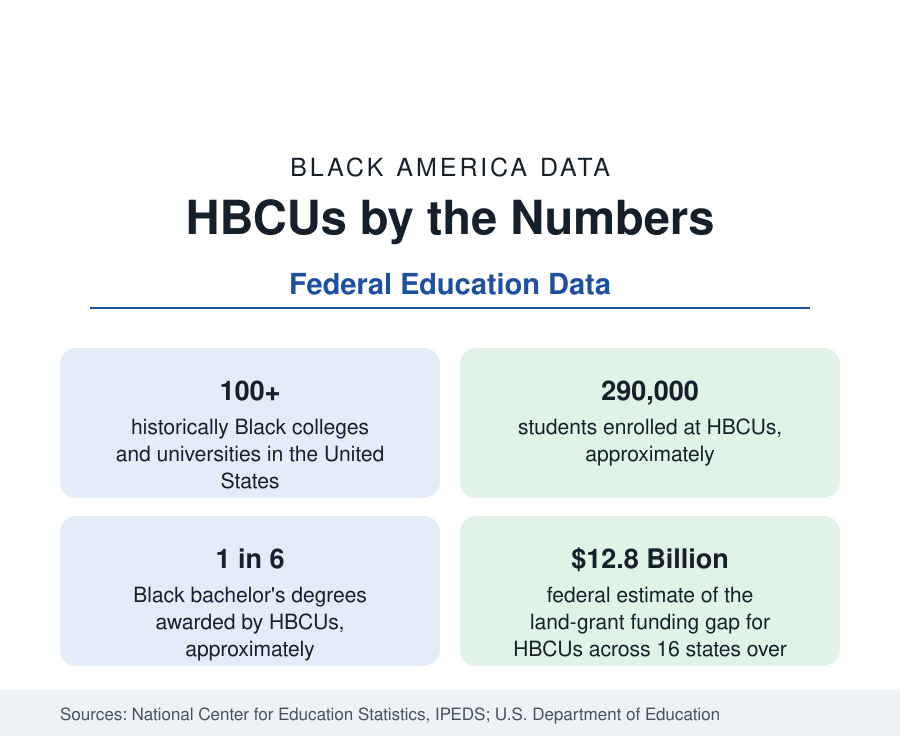

Black Education
Historically Black Colleges and Universities: Enrollment and Degrees
More than 100 HBCUs enroll roughly 290,000 students and award about one in six Black bachelor's degrees — an outsized share from a small sector. The federal education data.

Historically Black colleges and universities — HBCUs — are institutions founded before the Civil Rights Act of 1964 with the principal mission of educating Black Americans. More than one hundred of them operate today, enrolling roughly 290,000 students, and their statistical footprint is far larger than their size suggests: HBCUs award approximately one in six of all bachelor's degrees earned by Black students, and they are the undergraduate origin of a disproportionate share of Black doctors, lawyers, judges, and doctoral researchers. This article reports the sector's data: its scale, its students, its degree production, and its finances.
The Sector in Outline
The federal count of accredited HBCUs stands just above one hundred, split between public and private nonprofit institutions and concentrated in the South — in the states of the former Confederacy and border region where most were founded. They range from research universities such as Howard, with graduate and professional schools across medicine, law, and the sciences, to small liberal-arts colleges of a few hundred students. Total enrollment of roughly 290,000 is about 1.5 percent of American higher education, and Black students make up roughly three-quarters to four-fifths of HBCU enrollment, the remainder reflecting the institutions' open doors to all students since their founding era.
Degree Production Out of Proportion
The sector's signature statistic is its share of Black degrees relative to its share of Black enrollment. HBCUs enroll roughly one in ten Black undergraduates yet award about one in six Black bachelor's degrees — a completion premium that education researchers attribute to institutional mission, faculty representation, and peer environment, and that makes HBCUs the most productive sector per student in Black higher education. In the sciences the effect is stronger still: the baccalaureate origins of Black recipients of science and engineering doctorates are led, year after year in the National Science Foundation's surveys, by HBCUs — Xavier University of Louisiana in the pre-medical sciences and Howard, Spelman, and Hampton among them — ahead of far larger research universities.
Who Attends
HBCU students differ from the national student profile in ways the data make plain. They are more likely to be women — roughly two-thirds of HBCU enrollment — more likely to come from low- and moderate-income families, more likely to be first-generation college students, and far more likely to receive federal Pell Grants. Graduate and professional enrollment is a major part of the sector: HBCU law schools, medical schools at Howard, Meharry, Morehouse, and Charles Drew, and doctoral programs across the sector produce a large share of the Black professional class. The education section's related articles on enrollment and student debt place these figures in the wider Black higher-education landscape.
The Funding Gap
The sector's constraint is financial, and it is quantified in federal analyses. HBCU endowments per student run at a fraction of the national average for non-HBCU institutions, leaving the sector dependent on tuition and annual appropriations. For the public land-grant HBCUs, the disparity is a matter of state record: a federal analysis by the Departments of Education and Agriculture estimated that land-grant HBCUs in sixteen states had been underfunded relative to their land-grant counterparts by a cumulative $12.8 billion over three decades, with the largest single-state gap — Tennessee State University's — estimated at more than two billion dollars. Those figures, and the state responses to them, are tracked in this section's funding coverage.
Recent Trends
After a long enrollment decline in the 2010s, HBCU applications and enrollment rose sharply in the early 2020s — several flagship institutions recorded application increases of half or more within a few admission cycles — a movement widely attributed to students seeking the sector's environment during a period of national racial reckoning, and sustained since by philanthropic gifts of unprecedented size to the sector, including nine-figure donations to individual institutions. Whether the surge represents a durable re-centering of Black higher education or a cyclical crest is a question the enrollment data of the coming cycles will answer; the degree-production role, by contrast, has been a constant of the federal data for half a century.
Summarized: a sector of about one hundred institutions and 290,000 students producing one in six Black bachelor's degrees and an outsized share of Black professional and doctoral talent, on endowments and public funding far below peer institutions. No account of Black education in the federal data is complete without it, and the profiles of individual institutions follow in this section.
More in Black Education
Black Educational Attainment: High School Parity, the College Gap
About 89 percent of Black adults hold a high school diploma and one in four holds a bachelor's degree or higher — the attainment ladder, the college completion gap, and the generational trend.
Black College Enrollment: 2.4 Million Students
About 2.4 million Black students are enrolled in American colleges — nearly two-thirds of them women. The NCES enrollment data by sector, level, and trend.
Black Student Loan Debt: Borrowing More, Owing Longer
More than four in five Black bachelor's graduates borrow — and four years out they owe about $25,000 more than White graduates. The debt data behind the attainment numbers.
Source: National Center for Education Statistics, Integrated Postsecondary Education Data System (IPEDS); U.S. Department of Education.